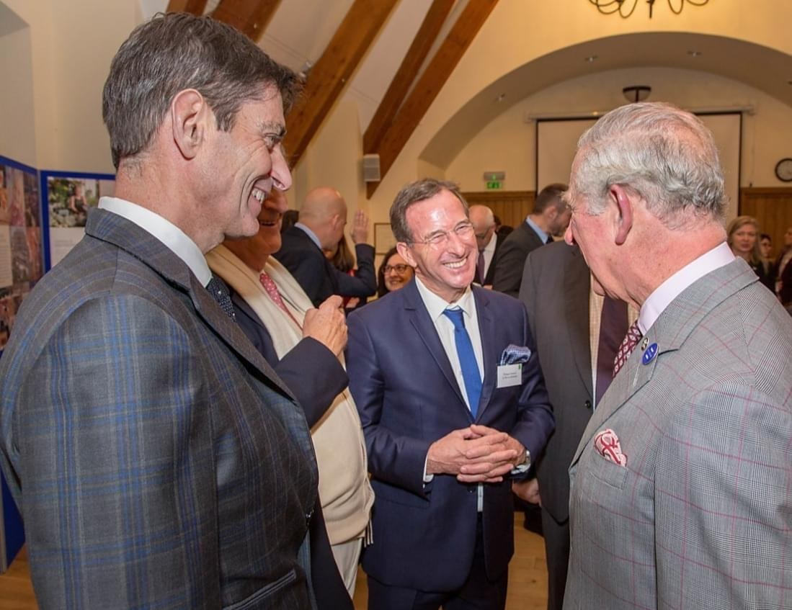

INTBAU Monde
INTBAU est un réseau mondial dédié à la création de meilleurs lieux de vie grâce à la construction, à l'architecture et à l'urbanisme traditionnels. Ce Réseau international pour la construction traditionnelle, l'architecture et l'urbanisme (INTBAU) a été créé en 2001 et compte depuis lors quarante sections et plus de 10 000 membres dans plus de cent pays et régions. Nous travaillons sous le patronage de notre fondateur, Sa Majesté le Roi Charles III. La mission d’ INTBAU est de soutenir la construction traditionnelle, le maintien du caractère local et la création de meilleurs lieux de vie. Nous y parvenons par le biais d'ateliers, d'écoles d'été, de voyages d'études, de conférences, de prix et de concours.
INTBAU France
Le Chapitre INTBAU-France a été crée en 2023 avec pour objet de représenter et valoriser les traditions locales essentielles au fonctionnement de l'organisation INTBAU, et de mener des activités destinées à promouvoir une conception architecturale respectueuse des traditions et un urbanisme humain correspondants au besoins de ses membres et des communautés locales, ces activités s'articulent plus particulièrement autour de l'éducation, de la diffusion d'informations et de la promotion de ses valeurs. Président : Philippe Pemezec, ancien sénateur des Hauts-de-Seine, maire du Plessis-Robinson Adresse : 122, boulevard Raspail 75006 Paris Contact : intbau-france@gmail.com